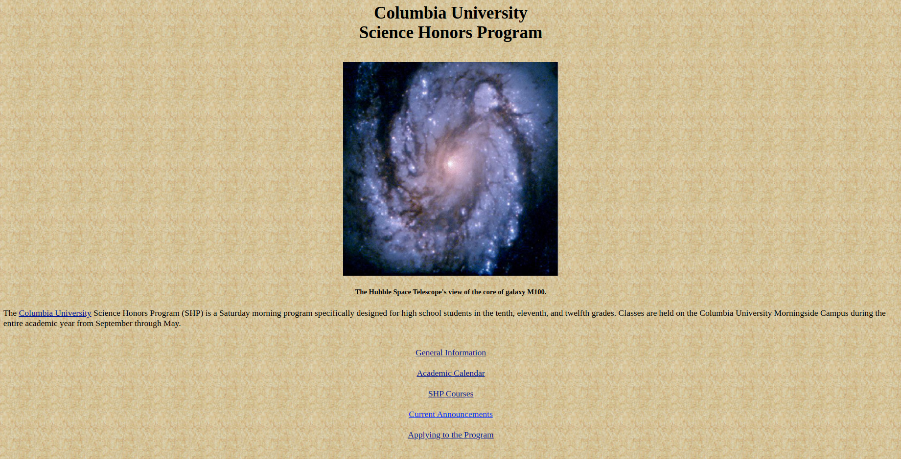

Redesigning Columbia SHP's Website
Each year, Columbia University opens its Science Honors Program to hundreds of high school students across the tri-state area. The free program provides an exploratory experience for high schoolers with an interest in math or science through weekend lectures led by graduate students and professors. Students participate in a rigorous application process (including two tests) to attend, and the competition grows fiercer every year.
As a former participant myself, Columbia University’s Science Honors Program (SHP for short) was an incredible and unique experience. The only problem? The program’s website poses a unique challenge to its users:
Problems with an Antiquated Design
The most notable user issue with the SHP website is its style and layout-- users who are used to modern sites with large text, ample spacing, and sleek menus could be at first confused by the “vintage” layout of this homepage. Although all links are clearly marked and labeled, the user expects to see a page adhering to certain modern standards, and the lack of these causes the design to feel unintuitive and inefficient.
At immediate glance, lack of a distinct visual hierarchy of color or size makes the information of this page difficult to scan. Although some information is bolded, the lack of other distinctions combined with the monotonous blocks of inline text create a cluttered layout.
In this project, we aim to redesign the layout of this website, and address some of these problems.
Wireframing
To begin, I reimagined each of the major pages of the SHP website with low-fidelity wireframes:


My main goals with these initial designs was to:
- Present a simple, elegant layout that modern users are more comfortable with
- Create a strong visual hierarchy
- Increase ease and intuitiveness of navigation
High-Fidelity Mockup
Next, I created a colored mock-up of the redesigned homepage:

In this mockup, I created visual differences between different parts of the page-- for example, the title is given a unique font, menu items have distinct text size and take on button-like shapes, and the title for “Current Announcements” is given a much larger text size than the announcements themselves. I used a grid for the announcements section to make it easy for readers to see the distinct announcements, and placed the site’s introductory blurb in a uniquely-colored and -positioned box to make it easily ignorable for frequent site users who are just checking for new announcements
I chose a modern-looking, simple palette that imitates the palette of Columbia University’s main homepage, solidifying the connection between the program and the university and reinforcing the site's reliability in the user’s eyes. I used an accent color to highlight the “How to Apply” button so that new users can quickly find the most important information regarding the program, and ensured that colors varied across the page for a visually interesting layout that does not impede readability.
Responsive Development
Finally, I created a live, responsive web page version of this mockup, which resizes and adjusts dynamically to the size of the viewport.
Conclusion
I designed a new, modern interface for the Columbia SHP Program's website. While simpler, more bare-bones interfaces do not inherently impede user access and ease of use, modern websites can make use of modern users' expectations and intuitions to create a more elegant website experience.
This project was undertaken as a personal project, and is not affilated or endorsed by Columbia University or the Science Honors Program.